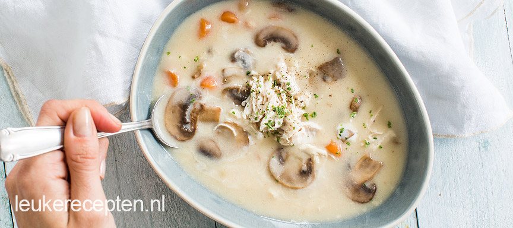

Romige kippensoep met champignons
Deze romige kippensoep met champignons is heerlijk als een voorgrecht en is een goede basis voor de andere maaltijden.
Ingrediënten
- 1 liter kippenbouillon
- 250 gram champignons
- 100 ml room
- 50 gram boter
- 60 gram bloem
- 60 gram wortel
- 1 grote kipfilet
Bereidingswijze
- Breng een pannetje met water aan de kook. Doe hier de kipfilet in en kook in ca 15 minuten gaar.
- Bak in een koekenpan de champignons lichtjes aan.
- Smelt ondertussen in een andere (soep)pan de boter en voeg hier vervolgens de bloem aan toe.
- Roer met een garde door elkaar en laat deze roux een paar minuutjes zachtjes bakken.
- Giet dan de kippenbouillon er beetje bij beetje bij en blijf roeren met de garde.
- Snijd de wortel in kleine stukjes en voeg toe aan de soep en kook nog een paar minuutjes mee.
- Roer de room en champignons er door en warm nog even mee.
- Proef of de soep goed op smaak is en voeg eventueel een beetje peper of zout toe.
- Laat de kip uitlekken en trek met 2 vorken uit elkaar tot pulled chicken.
- Serveer de romige kippensoep met de pulled chicken.
